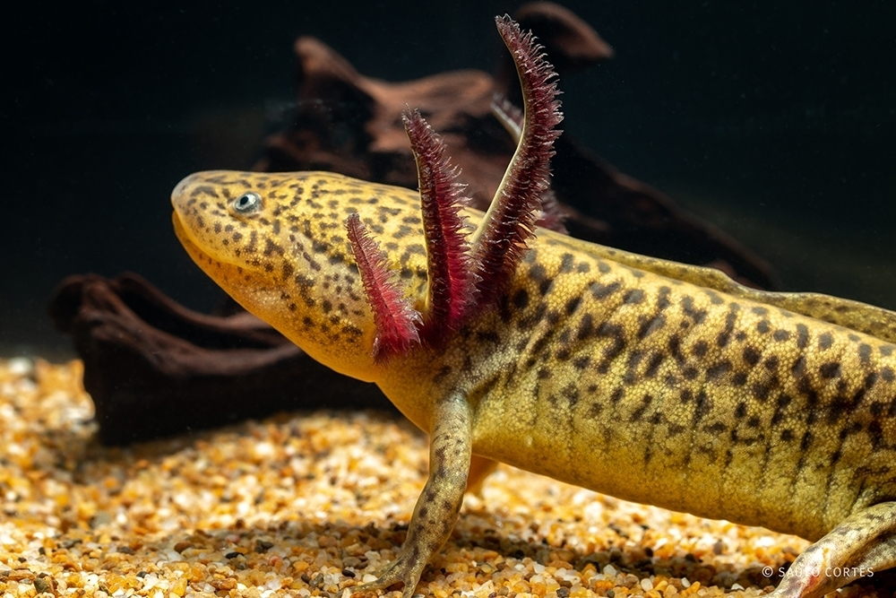
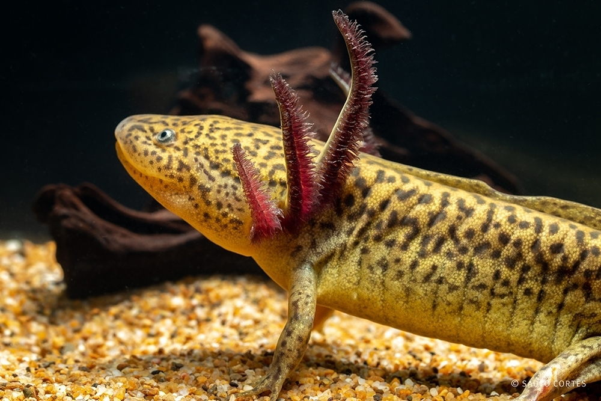
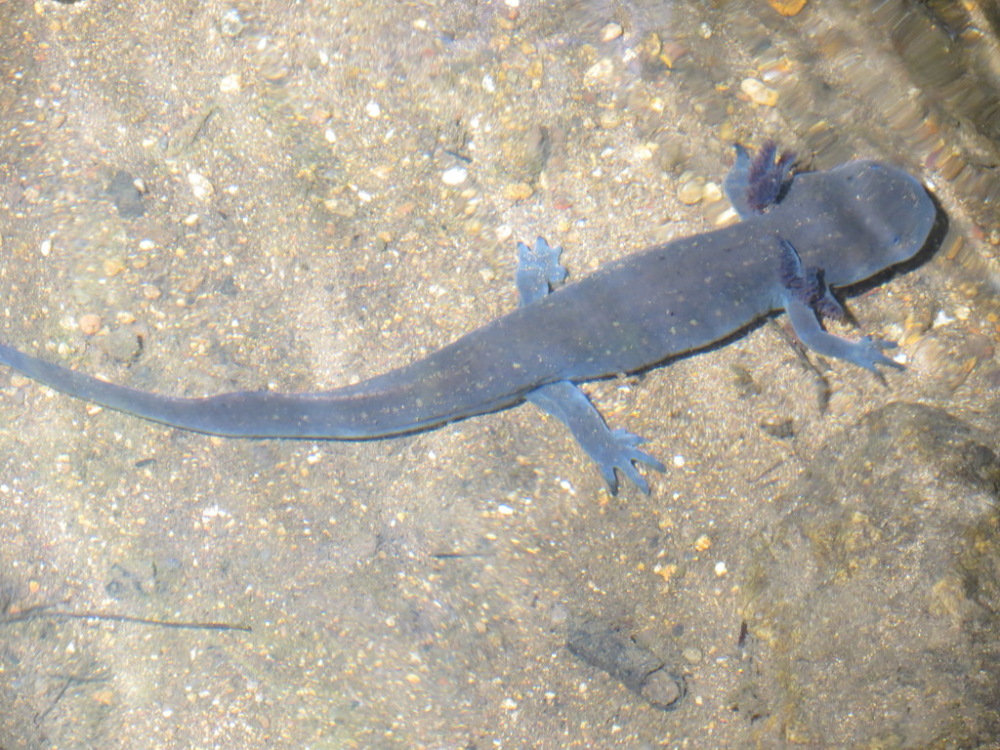
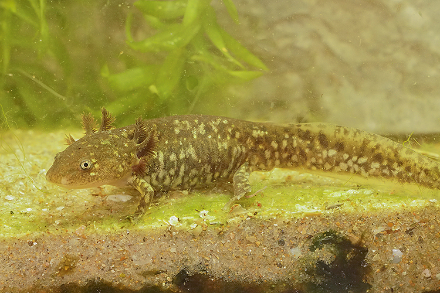
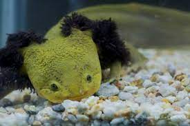
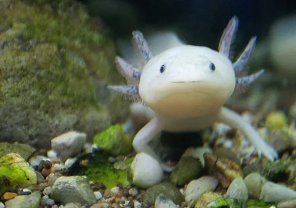
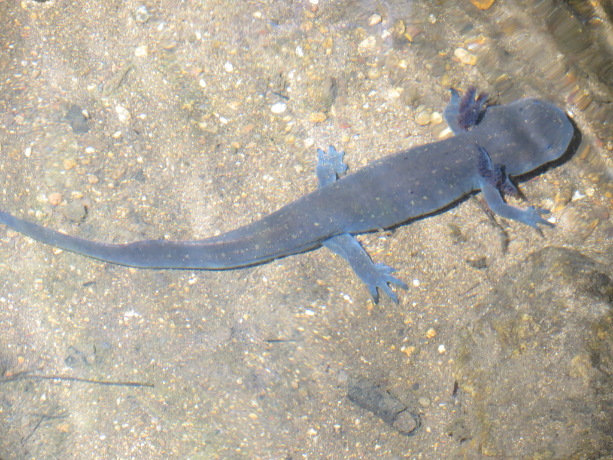
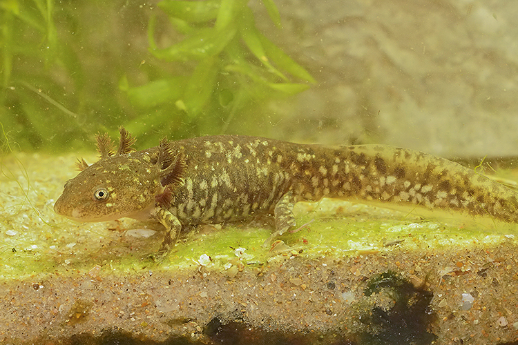
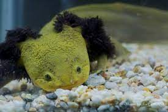
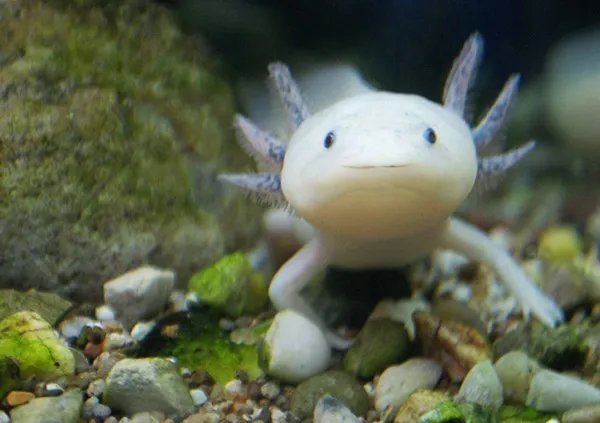

| Especie |
Español |
Ingles |
| Ambystoma altamirani |
Ajolote |
Mountain Stream Siredon |
| Ambystoma amblycephalum |
Ajolote de cabeza chata |
Blunthead Salamander |
| Ambystoma andersoni |
Achoque, ajolote |
Anderson's Salamander |
| Ambystoma bombypellum |
Ajolote |
Delicateskin Salamander, Axolotl |
| Ambystoma cabecerium |
Ajolote |
Headwater Salamander |
| Ambystoma dumerilli |
Achoque |
Lake Patzcuaro Salamander |
| Ambystoma flavipiperatum |
Ajolote de Chapala |
Yellow-peppered Salamander |
| Ambystoma granulosum |
Ajolote Granulado |
Granular Salamander |
| Ambystoma leorae |
Ajolote |
Leora's Stream Salamander |
| Ambystoma lermaense |
Ajolote |
Lake Lerma Salamander |
| Ambystoma mavortium |
Ajolote |
Barred Tiger Salamander |
| Ambystoma mexicanum |
Ajolote |
Axolotl |
| Ambystoma ordinarium |
Achoque, ajolote |
Michoacan Stream Salamander, Michoacan |
| Ambystoma rivulare |
Achoque, ajolote |
Puerto Hondo Stream Salamander |
| Ambystoma rosaceum |
Ajolote |
Tarahumara Salamander |
| Ambystoma silvense |
Ajolote, salamandra |
Durango Salamander |
| Ambystoma taylori |
Ajolote |
Taylor's Salamander |
| Ambystoma velasci |
Ajolote, salamandra |
Plateau Tiger Salamander |
"Datos curiosos del ajolote."

Es un ser mitológico timido
Esacapa de la muerte.
Es el anfibio de la eterna juventud.
El nombre axolote, viene del nahualt Axoltl, que significa:mosntruos de agua.
Se relaciona con el dios Xolotl, hermano de Quetzalcoatl, quien se rehusaba al sacrificio.
Unico anumal capaz de regenerar cualquier parte de su cuerpo.
No tiene parpados.
Tipo de Ajolotes
 Leyenda azteca del ajolotes
Leyenda azteca del ajolotes
Consultar video de los ajolotes
 


.jpg)
 






